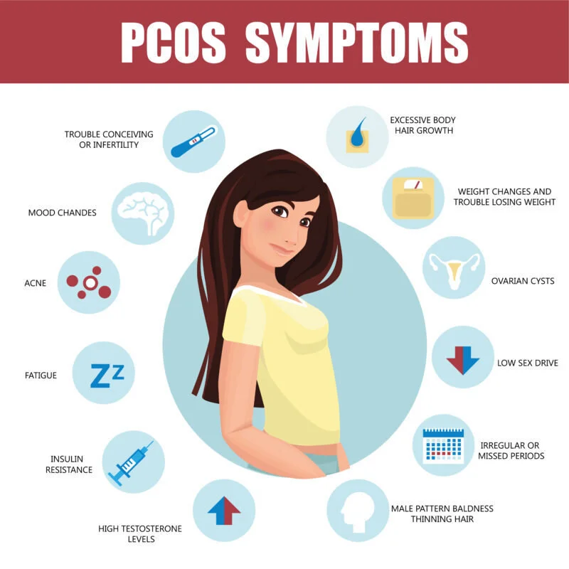
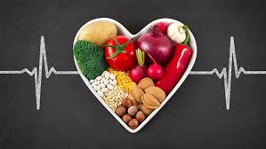
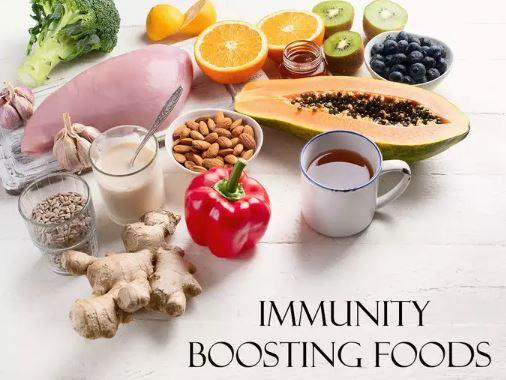
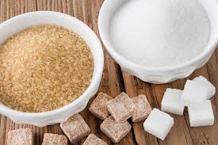
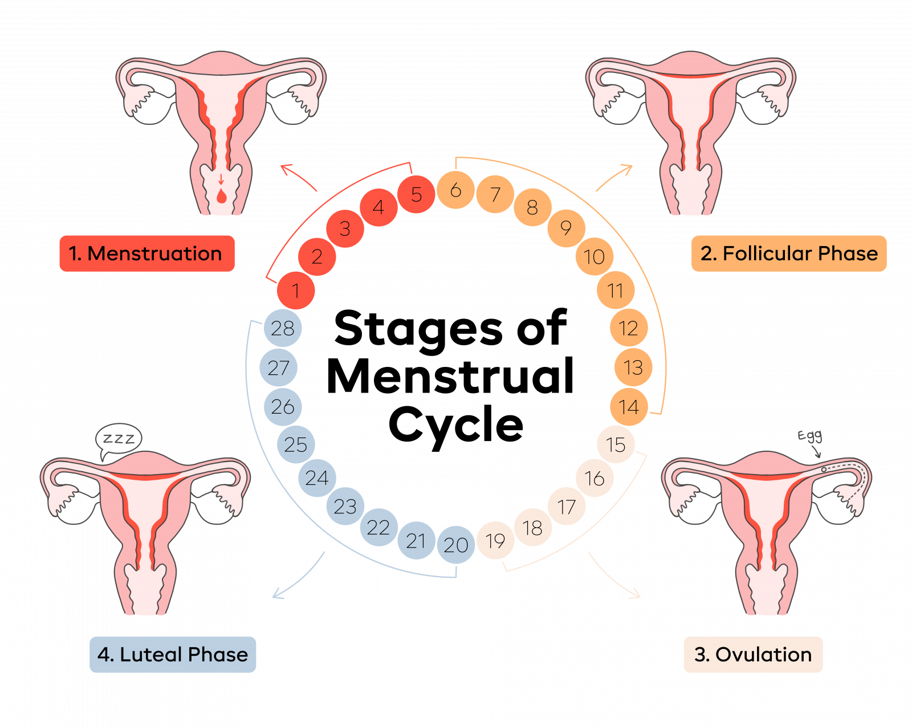
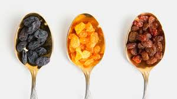
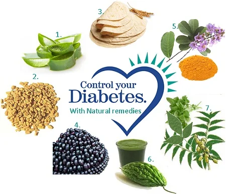

PCOS
Polycystic Ovary Syndrome (PCOS) is a hormonal disorder common among women of reproductive age..
Read More

Top 10 Foods for a Healthy Heart
A healthy diet is key to maintaining a strong heart. In this article, we'll explore the top 10 foods that promote cardiovascular health...
Read MoreFinding the Best Type 2 Diabetes Treatment: A Comprehensive Guide
Diabetes management involves a combination of medication, diet, and exercise...
Read More*Nutrients That Build Immunity - Part 1*
Good nutrition is a key player in boosting your immune ...
Read More

Best Immune-Boosting Foods: Foods for Immunity and How to Strengthen Your Immune System
Food which build up immunity...
White vs. Brown Sugar: Which Is Better for Your Health?
debate between white and brown...
Read MoreThe 4 Phases of Your Menstrual Cycle, Decoded: A Comprehensive and Practical Guide
As a gyne dietitian with over a decade of experience working with women ...
Read MoreRaisins vs. Black Currants vs. Dates: Which is Better for Health?
both being equally tasty..
Read MoreNature’s Bounty: Discover Powerful Natural Solutions for Managing Diabetes! 🍃
natures bounty..
Read MoreUnlocking Vitamin D: How Essential Nutrients Boost Absorption and Optimize Health
Vitamin-d-foods..
Read MoreUnderstanding BMI and Its Implications: A Focus on the Indian Population
Understanding BMI and Its Implicati..
Read More